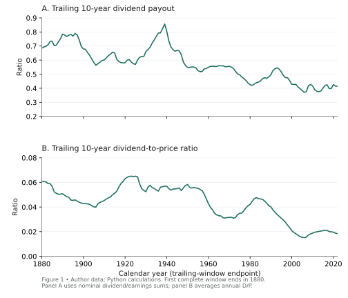
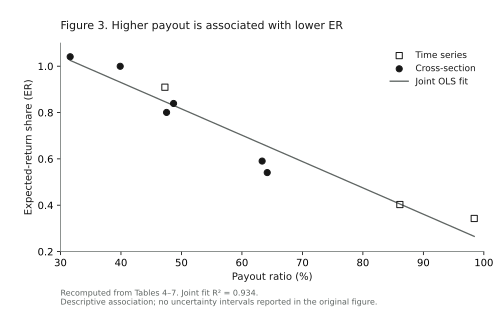
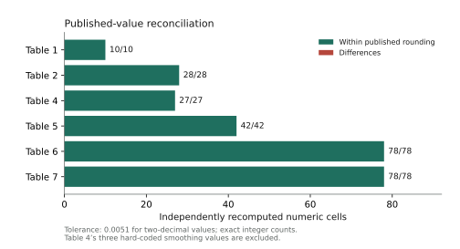

Local Python translation of the assigned empirical exhibits. Author data: Mendeley v1, DOI 10.17632/fp6fryn7h3.1. Prepared for Lauris Li.
Scope: Tables 1, 2, 4, 5, 6, 7 and Figures 1, 3. Original 2022 sample; no recent-data update or raw-stock portfolio reconstruction is claimed.
Known source limitations: Table 4’s three smoothing values are constants from MATLAB, not independent estimates. Figure 3 below is recomputed from current tables; the separate author-summary version uses the supplied frozen workbook. Figure 1 uses correct calendar endpoints rather than the MATLAB tick offset.
| Market | Dividend strips | |
|---|---|---|
| Statistic | ||
| Return mean (%) | 6.38 | 5.25 |
| Return SD (%) | 17.08 | 14.22 |
| Dividend growth mean (%) | 3.32 | — |
| Dividend growth SD (%) | 7.62 | — |
| Dividend-price mean (%) | 1.82 | 66.99 |
| Dividend-price SD (%) | 0.38 | 9.39 |
January 1996–December 2022. Real log 12-month returns and growth; monthly observations. Standard deviations use n−1. Dividend-price ratios are levels in percent.
Full-precision CSV · LaTeX table
| Market | Dividend strips | |
|---|---|---|
| Statistic | ||
| Return slope | 0.39 | 0.56 |
| Return t-stat (NW) | 3.54 | 6.61 |
| Return t-stat (non-overlap) | 2.84 | 3.40 |
| Return R-squared | 0.21 | 0.26 |
| Dividend growth slope | -0.02 | -0.40 |
| Dividend growth t-stat (NW) | -0.15 | -4.31 |
| Dividend growth t-stat (non-overlap) | -0.06 | -3.59 |
| Dividend growth R-squared | 0.00 | 0.45 |
| Dividend-price slope | 0.61 | — |
| Dividend-price t-stat (NW) | 4.86 | — |
| Dividend-price t-stat (non-overlap) | 4.08 | — |
| Dividend-price R-squared | 0.37 | — |
| ER | 0.96 | 0.56 |
| ER (implied) | 0.95 | 0.60 |
| EDG | 0.05 | 0.40 |
| EDG (implied) | 0.04 | 0.44 |
12-month outcomes, monthly observations. HAC t-statistics use 12 lags without a small-sample correction. Non-overlapping t-statistics average 12 offset regressions, each using one HAC lag, as in the supplied code. Blank cells are not applicable.
Full-precision CSV · LaTeX table
| 1945–2022 | 1629–1945 | 1629–2022 | |
|---|---|---|---|
| Statistic | |||
| Payout (%) | 47.26 | 98.41 | 86.11 |
| Return mean (%) | 6.56 | 5.86 | 6.00 |
| Return SD (%) | 16.91 | 14.12 | 14.69 |
| DY/RET | 0.41 | 0.69 | 0.63 |
| Dividend growth mean (%) | 2.37 | 0.81 | 1.12 |
| Dividend growth SD (%) | 6.67 | 13.29 | 12.28 |
| Dividend-price mean (%) | 3.24 | 4.86 | 4.54 |
| Dividend-price SD (%) | 1.43 | 1.27 | 1.45 |
| Dividend-price AR(1) | 0.91 | 0.69 | 0.79 |
| Smoothing* | 0.21 | 0.32 | 0.31 |
Real annual series. Payout coverage is incomplete before 1945. Smoothing* is copied from constants in the authors’ script, whose separate estimation file is not supplied; it is NOT independently recomputed.
Full-precision CSV · LaTeX table
| 1945–2022 | 1629–1945 | 1629–2022 | |
|---|---|---|---|
| Statistic | |||
| Return slope | 0.09 | 0.11 | 0.07 |
| Return t-stat (NW) | 2.10 | 3.22 | 2.70 |
| Return difference t-stat | — | 0.42 | — |
| Return R-squared | 0.05 | 0.04 | 0.03 |
| Dividend growth slope | -0.01 | -0.20 | -0.09 |
| Dividend growth t-stat (NW) | -0.41 | -5.30 | -4.14 |
| Dividend growth difference t-stat | — | -4.29 | — |
| Dividend growth R-squared | 0.00 | 0.14 | 0.07 |
| Dividend-price slope | 0.93 | 0.72 | 0.87 |
| Dividend-price t-stat (NW) | 21.75 | 15.75 | 27.79 |
| Dividend-price difference t-stat | — | -3.46 | — |
| Dividend-price R-squared | 0.86 | 0.52 | 0.75 |
| ER | 0.91 | 0.34 | 0.40 |
| ER (implied) | 0.90 | 0.37 | 0.45 |
| EDG | 0.10 | 0.63 | 0.55 |
| EDG (implied) | 0.09 | 0.66 | 0.60 |
Annual OLS with one-lag Newey-West standard errors. Differences are prewar interaction t-statistics. Geographic splice transitions are excluded. Full-sample rho follows the original script, including the duplicated 1945 level.
Full-precision CSV · LaTeX table
| All | Low | Medium | High | Below 0.5 | Above 0.5 | |
|---|---|---|---|---|---|---|
| Statistic | ||||||
| Number of stocks: mean | 724.78 | 241.24 | 241.97 | 241.56 | 445.59 | 279.19 |
| Number of stocks: min | 206.00 | 68.00 | 69.00 | 69.00 | 12.00 | 155.00 |
| Number of stocks: max | 1,211.00 | 403.00 | 404.00 | 404.00 | 951.00 | 409.00 |
| Payout (%) | 48.70 | 31.60 | 47.54 | 64.18 | 39.88 | 63.34 |
| Return mean (%) | 6.49 | 6.79 | 6.78 | 5.79 | 6.97 | 6.28 |
| Return SD (%) | 15.39 | 17.83 | 15.75 | 14.34 | 16.95 | 14.24 |
| DY/RET | 0.45 | 0.29 | 0.42 | 0.63 | 0.36 | 0.59 |
| Dividend growth mean (%) | 2.36 | 3.16 | 2.78 | 1.13 | 3.08 | 1.73 |
| Dividend growth SD (%) | 6.29 | 9.23 | 6.01 | 9.03 | 7.06 | 7.79 |
| Dividend-price mean (%) | 3.48 | 2.44 | 3.37 | 4.38 | 2.98 | 4.36 |
| Dividend-price SD (%) | 1.26 | 1.29 | 1.16 | 1.35 | 1.26 | 1.49 |
| Dividend-price AR(1) | 0.88 | 0.91 | 0.87 | 0.84 | 0.88 | 0.87 |
| Smoothing | 0.32 | 0.50 | 0.31 | 0.18 | 0.42 | 0.14 |
1945–2022 author-provided portfolios; 77 annual outcomes. Ten-year trailing payout; value-weighting and stock selection were performed upstream by the authors. The baseline uses these prepared portfolios; the separately labelled update reconstructs the stock panel.
Full-precision CSV · LaTeX table
| All | Low | Medium | High | Below 0.5 | Above 0.5 | |
|---|---|---|---|---|---|---|
| Statistic | ||||||
| Return slope | 0.10 | 0.09 | 0.11 | 0.09 | 0.11 | 0.08 |
| Return t-stat (NW) | 2.44 | 2.38 | 2.49 | 1.97 | 2.62 | 1.77 |
| Return R-squared | 0.05 | 0.07 | 0.05 | 0.04 | 0.07 | 0.04 |
| Dividend growth slope | -0.02 | 0.00 | -0.03 | -0.08 | -0.00 | -0.06 |
| Dividend growth t-stat (NW) | -0.85 | 0.06 | -1.22 | -1.94 | -0.11 | -1.97 |
| Dividend growth R-squared | 0.01 | 0.00 | 0.02 | 0.07 | 0.00 | 0.07 |
| Dividend-price slope | 0.91 | 0.93 | 0.90 | 0.87 | 0.91 | 0.89 |
| Dividend-price t-stat (NW) | 20.78 | 21.91 | 19.40 | 14.98 | 21.20 | 17.85 |
| Dividend-price R-squared | 0.82 | 0.86 | 0.79 | 0.75 | 0.82 | 0.79 |
| ER | 0.84 | 1.04 | 0.80 | 0.54 | 1.00 | 0.59 |
| ER (implied) | 0.83 | 1.02 | 0.79 | 0.53 | 0.98 | 0.57 |
| EDG | 0.17 | -0.02 | 0.21 | 0.47 | 0.02 | 0.43 |
| EDG (implied) | 0.16 | -0.04 | 0.20 | 0.46 | 0.00 | 0.41 |
Annual OLS with one-lag Newey-West standard errors, no finite-sample correction. ER/EDG are direct and implied decomposition shares, not R-squared. Negative estimates and values above one are retained.
Full-precision CSV · LaTeX table


Compare the authors’ saved-summary Figure 3
| table | recomputed_cells | within_tolerance | differences | source_constants |
|---|---|---|---|---|
| 1 | 10 | 10 | 0 | 0 |
| 2 | 28 | 28 | 0 | 0 |
| 4 | 27 | 27 | 0 | 3 |
| 5 | 42 | 42 | 0 | 0 |
| 6 | 78 | 78 | 0 | 0 |
| 7 | 78 | 78 | 0 | 0 |

All cell comparisons · Data checks · Build hashes
Matching original estimates establishes translation fidelity, not independent validation of how the authors constructed restricted upstream data. See REPLICATION.md for implementation details and remaining work.